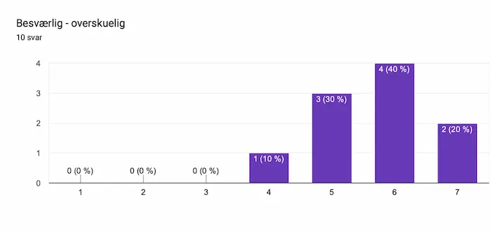
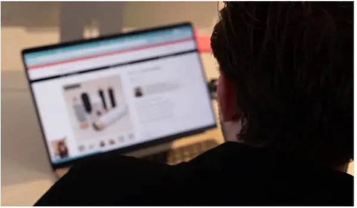
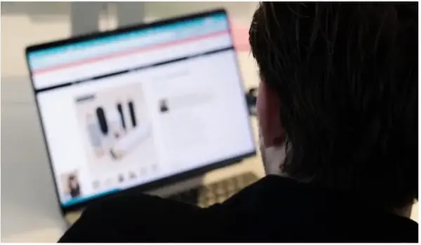
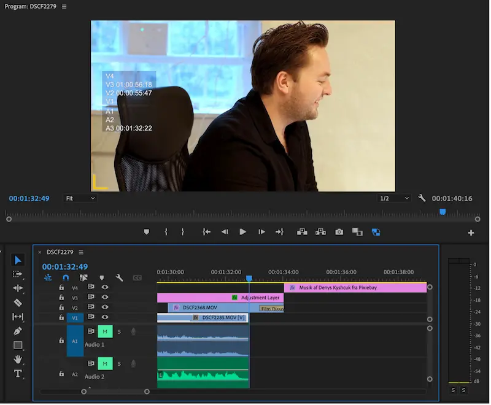
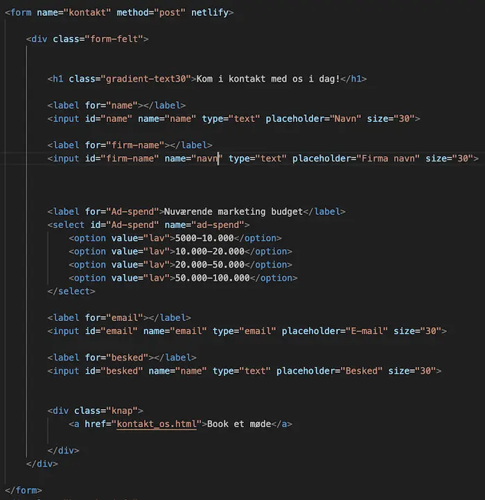

Grundlæggende indhold
I tema 5 fik vi introduktion til videoproduktion, herunder præproduktion og postproduktion.
Vi blev introduceret til programmer som Premiere Pro og Audition til lyd-, lys- og videoredigering.
05.01.01 Videosite
I denne opgave skulle vi producere en 60 sekunders video af en person, der beretter om sin passion, samt et website som skulle indeholde stilbilleder og videoen.
Vi lavede et storyboard for vores video, og skød efter 5-skuds reglen, hvilket sikrer at vi får en dynamisk video med forskellige perspektiver.
Videoproduktionen lærte mig vigtigheden af at skyde nok B-rolls, samt efterredigering af lyd og lys. Denne viden tog jeg mig til til næste videoprojekt til vores virksomhedssite.
Video og stilbilleder fra opgaven
05.02.01 Virksomhedssite
I denne opgave var vores mål at lave et redesign af Makerz' eksisterende hjemmeside. Makerz er et socialtmedie bureau, og deres konkrete ønske var at booke flere møder fra deres hjemmeside, samt at opnå større brugervenlighed.
Vi anvendte kompetencer som BERT-test og Heuristisk evaluering til optimering af designdelen, og anvendte Trello-boards, Scrum møder og Git til at optimere vores gruppearbejde.
BERT-test og Heuristisk evaluering
Vi løste ønsket om større brugervenlighed ved løbende at lave Heuristisk evaluering, og dermed sørge for, at der var konsistens, genkendelse og et simpelt, æstetisk design. BERT-test af redesign viser stor overskuelighed og brugervenlighed.
Redesignede website
Fokus på overskuelig tekst, samt nem adgang til mødebooking. De mørke farver er ønsket at Makerz, og gradient-effekten skaber dybde og interesse, og anvendes blandt andet af brands som Spotify og Zara.
Billede- og videoredigering
Før billederedigering.
Efter billederedigering.
Videoredigering i Audition
HTML form
Eksempel på kode der arbejder sammen med Simplify for opfangelse af data fra "Kontakt os" knapper.
